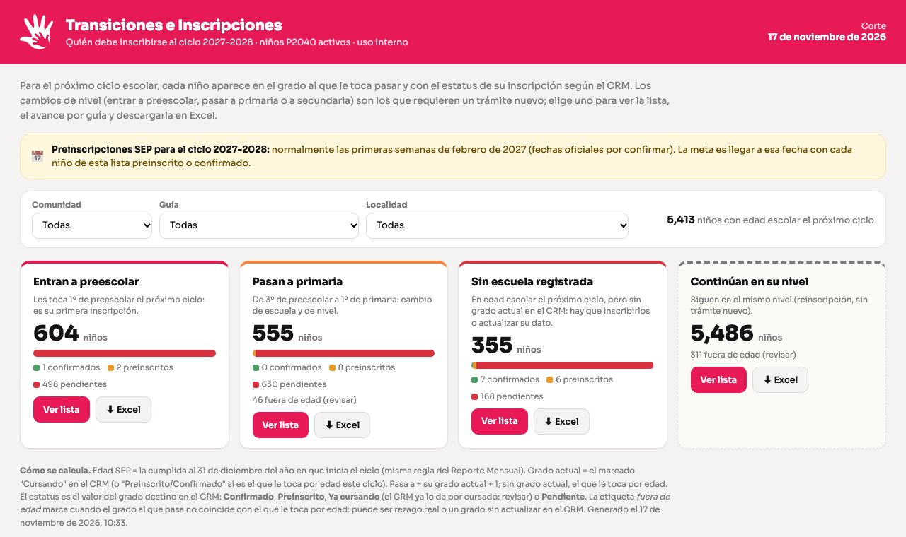

Manual de Transiciones e Inscripciones
Quién debe inscribirse al próximo ciclo escolar y cómo va su preinscripción: cómo se calcula cada grupo y cómo usar las listas.
1¿Para qué sirve?
Responde quién debe inscribirse al próximo ciclo escolar y cómo va su trámite. Cada niño aparece en el grado al que le toca pasar y con el estatus de su inscripción según el CRM.
Los cambios de nivel (entrar a preescolar, pasar a primaria o a secundaria) son los que requieren un trámite nuevo. La meta es llegar a la fecha de preinscripciones con cada niño de esas listas preinscrito o confirmado. El reporte muestra arriba la fecha esperada.
2Cómo se calcula
- Edad: la cumplida al 31 de diciembre del año en que inicia el ciclo (regla SEP, igual que el Reporte Mensual).
- Grado actual: el marcado como «Cursando» en el CRM (o «Preinscrito / Confirmado» si es el que le toca por edad este ciclo).
- Pasa a: su grado actual + 1. Si no tiene grado actual, el que le toca por edad.
- Estatus: el valor del grado al que pasa en el CRM: Confirmado, Preinscrito, Ya cursando (el CRM ya lo da por cursado: hay que revisarlo) o Pendiente.
- Fuera de edad: el grado al que pasa no coincide con el que le toca por edad. Puede ser rezago real o un grado sin actualizar en el CRM.
3Cómo moverte en el reporte

- Comunidad, Guía y Localidad: los conteos, las listas y las descargas respetan los filtros.
- Cada tarjeta trae cuántos niños hay y cuántos están confirmados, preinscritos y pendientes.
- Ver lista abre a los niños del grupo con el avance por guía; ⬇ Excel la descarga.
4Los cuatro grupos
| Grupo | Quiénes son |
|---|---|
| Entran a preescolar | Les toca 1º de preescolar el próximo ciclo: es su primera inscripción. |
| Pasan a primaria | De 3º de preescolar a 1º de primaria: cambio de escuela y de nivel. |
| Sin escuela registrada | En edad escolar el próximo ciclo, pero sin grado actual en el CRM: hay que inscribirlos o actualizar su dato. |
| Continúan en su nivel | Siguen en el mismo nivel: reinscripción, sin trámite nuevo. |
5Preguntas frecuentes
«Sin escuela registrada» quiere decir que el niño no estudia
No necesariamente: puede ser que falte capturar su grado en el CRM. Confírmalo en la visita.
¿Qué hago con «Ya cursando»?
Revisa el perfil: el CRM ya tiene marcado como cursado un grado que todavía no empieza. Casi siempre es un dato por corregir.
¿Por qué un niño sale «fuera de edad»?
Porque el grado al que pasa no es el que le toca por su edad. Puede ir atrasado de verdad o su grado no se actualizó: compáralo con el reporte de Rezago Educativo.